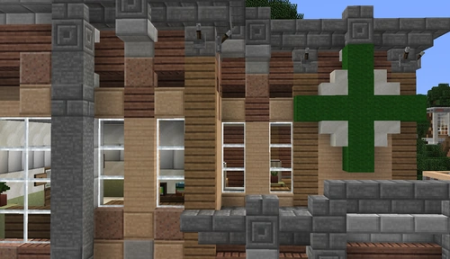

FeelsGoodMan Clinic
A Feels Good Man Pharmaceuticals clinic on the edge of prosperous Broverly Hills, serving clients who can pay for priority care.
Location and ownership
FeelsGoodMan Clinic stands on the edge of Broverly Hills, a district presented as prosperous. The clinic belongs to the powerful Feels Good Man Pharmaceuticals and is described as an elegant establishment catering to the wealthy.



Facilities and specialties
Its facilities include psychiatric services, urgent care, life support and a mortuary unit. The description presents it as the best-equipped medical establishment in the area for those who can afford it. Its psychology department is also highlighted for results advertised as the best in the region.
Care and profit
The clinic's portrayal satirizes treating the richest 1%'s hypochondria as a source of extraordinary profits. Its promise of no waiting depends on the ability to pay: if every unit is occupied, a client can secure a place by paying more than someone else. This policy makes profit the institution's central principle.
See also
Sources and references
- v11.4.4 maps, signs, books and items World records
- FeelsGoodMan Clinic · Broville Wiki Community archive
Text adapted and expanded from FeelsGoodMan Clinic (contributors and history, revision 4971). Adapted text is available under CC BY-SA 3.0.